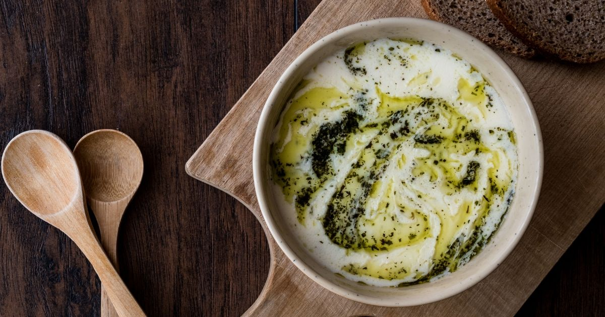
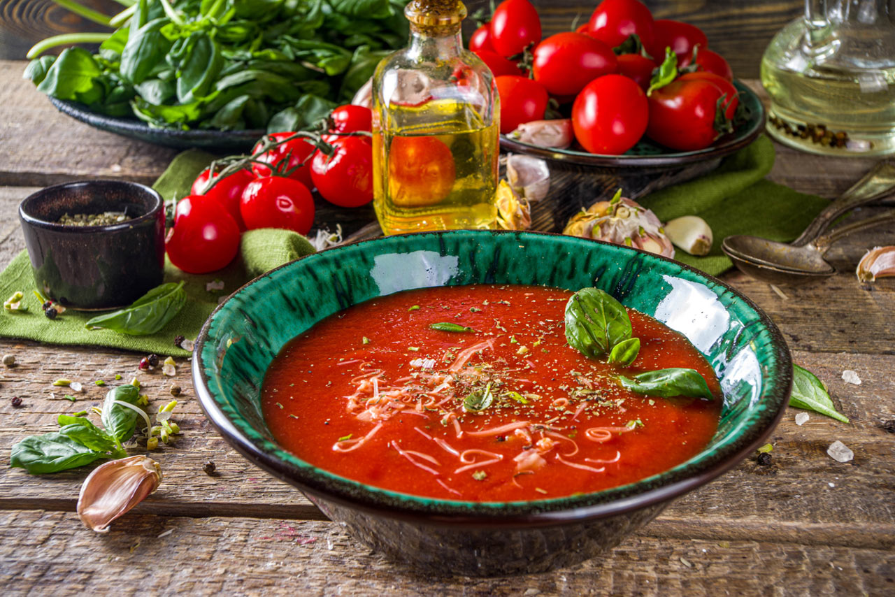

SOUPS
- 1 cup tarhana
- 1 onion, finely chopped
- 1 potato, diced
- 2 tomatoes, grated
- 1/2 cup red pepper paste
- 1/4 cup olive oil
- 6 cups water or vegetable broth
- Salt and pepper to taste
- In a large pot, heat the olive oil over medium heat. Add the finely chopped onion and sauté until it becomes translucent
- Add the red pepper paste and continue to sauté for a couple of minutes until it releases its aroma.
- Stir in the grated tomatoes and cook until the mixture thickens.
- Add the diced carrot and potato to the pot, and cook for an additional 5 minutes.
- In a separate bowl, dissolve the tarhana in water or vegetable broth, stirring continuously to avoid lumps.
- Pour the dissolved tarhana mixture into the pot, stirring constantly to combine.
- Add the remaining water or vegetable broth and bring the mixture to a boil. Reduce the heat to low and let it simmer, stirring occasionally, until the vegetables are tender.
- Season the soup with salt and pepper according to your taste.
- Once the soup reaches the desired consistency, remove it from the heat.
- Serve the tarhana soup hot, garnished with fresh mint or parsley if desired. Accompany with lemon wedges for a burst of citrus flavor.

TARHANA SOUP
Ingredients:
LENTIL SOUP
Ingredients:
- 1 cup red lentils
- 1 onion (finely chopped)
- 1 carrot (grated)
- 1 potato (grated)
- 1 potato (grated)
- 1 potato (grated)
- 2 tablespoons vegetable oil
- 1 tablespoon tomato paste
- 1 teaspoon pepper paste (optional)
- 7 cups water or chicken broth
- Lemon slices (for serving)
- Rinse and drain the red lentils.
- Heat vegetable oil in a large pot.
- Add the chopped onion and sauté until golden brown.
- Add the grated carrot and potato, and sauté for a few more minutes.
- Stir in the tomato paste and optional pepper paste.
- Add the rinsed lentils to the pot. Pour in the water or chicken broth.
- Once the mixture boils, reduce the heat and simmer, stirring occasionally, until the lentils are thoroughly cooked (approximately 20-25 minutes).
- Check the consistency of the soup. Add more water if needed.
- Season with salt, black pepper, and optional red pepper flakes. Stir well.
- Once the soup is simmering, remove it from heat.When serving, you can squeeze a few drops of lemon juice on top.

YOGURT SOUP
Ingredıents:
- 1 cup yogurt
- 2 tablespoons flour
- 1 egg yolk
- 6 cups water or chicken broth
- Salt
- Half a lemon (optional)
- 2 tablespoons butter
- 1 teaspoon red pepper flakes
- In a bowl, whisk together yogurt and flour.
- Add the egg yolk and continue to whisk.
- In a pot, bring water or chicken broth to a boil. Add the yogurt mixture while stirring continuously.
- Let it simmer while stirring until the soup thickens. Add salt to taste.
- Optional: Squeeze the juice of half a lemon into the soup and stir. Lemon juice is added for a tangy flavor.
- In a separate pan, melt butter. Add red pepper flakes and stir.
- Serve the soup in bowls and drizzle the butter and red pepper mixture over the top.

TOMATO SOUP
Ingredients:
- 6 medium-sized tomatoes (grated or chopped)
- 1 large onion (chopped)
- 2 tablespoons tomato paste
- 2 tablespoons butter or vegetable oil
- 1 tablespoon all-purpose flour
- 4 cups chicken or vegetable broth
- Salt and pepper to taste
- 1/2 cup milk (optional)
- 1 teaspoon sugar
- Melt butter or vegetable oil in a pot. Add chopped onion and sauté until translucent.
- Add tomato paste and stir until it releases its aroma.
- Add grated or chopped tomatoes. Add sugar, salt, and pepper. Cook for a few minutes until the tomatoes soften.
- Stir in the flour and cook for a few more minutes over low he
- Add chicken or vegetable broth. Bring the mixture to a boil, then reduce the heat and simmer for about 15-20 minutes.
- Use an immersion blender to blend the soup until smooth.
- Optionally, add milk and stir. Cook for a few more minutes.
- Garnish with fresh mint or basil before serving.